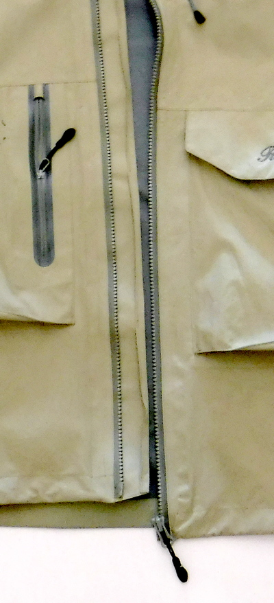
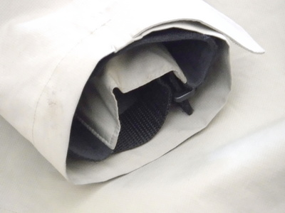
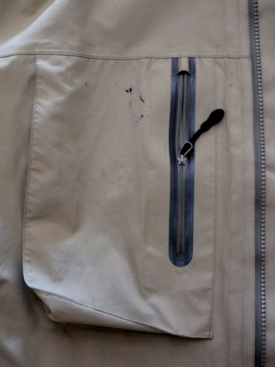
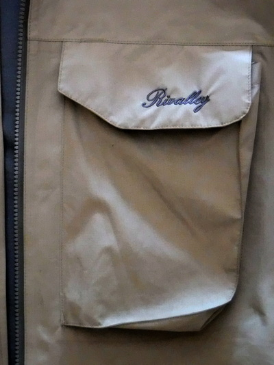
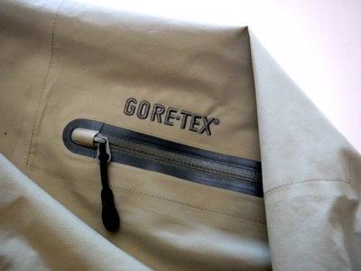
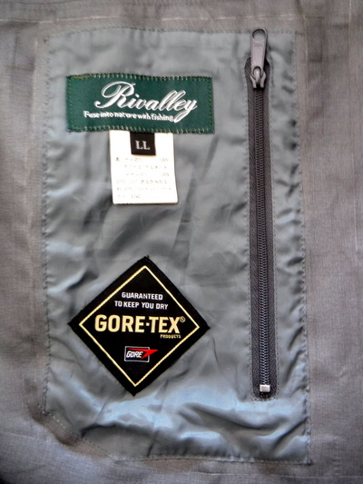
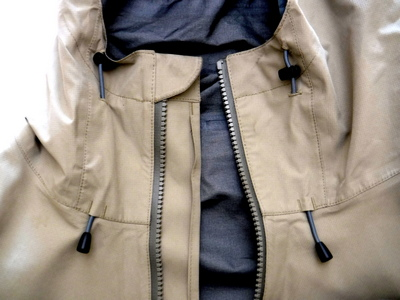
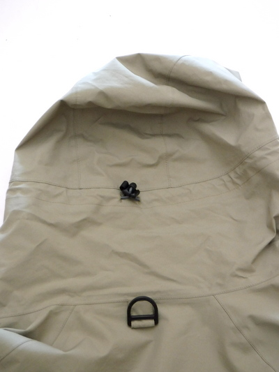
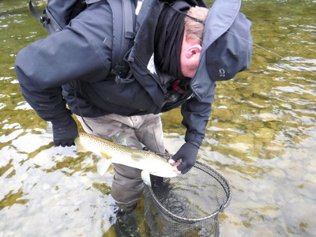
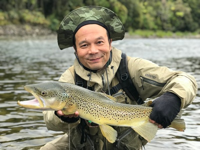

私のお気に入り
釣りの衣類 リバレイ ゴアテックス レインジャケット
この製品の購入のきっかけは、長いこと使ってきた先代のリバレイ製のレインジャケットがさすがにくたびれて来て、生地に細かなヒビが見られるようになり、防水性も落ちてきたので、これは 2010年ニュージーランド釣行のために新調しようと思ったからである。

リバレイ製 ゴアテックス レインジャケット
先代の製品で、品質がよいことはわかっていたので、迷わずリバレイ製レインジャケットのラインナップから選択した。（2020年時点では、ゴアテックス製のモデルは無いようです。）
○長所
- 防水性、透湿性は申し分ない性能である。運動しても蒸れることが無いので、肌寒い日にはウィンドブレーカーとしても着用可能。
- 身頃・前合わせの部分は丈夫なファスナーで、二重になっており、雨風が侵入しにくい。

前合わせの部分は二重仕立て - 袖口がネオプレン(マジックテープ止め）、とアウター生地との二重になっており、雨風が侵入しにくい。これも釣り用の雨具としては重要なポイント！

袖口はネオプレンとアウター生地の二重仕立て
(どちらもマジックテープ止め）になっている - 右胸には防水ファスナー付きの大型ポケットが配置されている。

右胸の防水ファスナー付きの大型ポケット - 左胸にはフラップ付きの大型ポケット。フラップをめくると、プラスチック製Dリングが付いている。このDリングに携帯電話の防水ポーチを結わえ付けられるので、非常に便利で安心。

左胸にはフラップ付きの大型ポケット。 - 左腕上腕部にも防水ファスナー付きのポケット

左腕のポケット - 身頃内側の左サイドには、防水ファスナー付きの内ポケットあり。右利きの人には便利。

防水ファスナー付きの内ポケット - 身頃の最下部（裾）は、ドローコードでサイズ調整が可能。
- フードの前端の周長もドローコードでサイズ調整が可能。

フードの前端もドローコードでサイズ調整が可能 - 首回りの周長もドローコードでサイズ調整が可能。
- 絶対的に必要な、ランディングネット装着用のDリングが装備されている。これは非常に重要！

首回りの調整用ドローコードと
ランディングネット装着用のDリング - コストパフォーマンスが良い。いくらで購入したのか忘れたが、10年以上使っても全然へたっていない。生地の劣化も、防水性の低下も見られない。良いものは、高い価格でも永く使えるので結局は安く付く、と言う典型例だと思う。
●短所
- 色は地味なカーキ系でいいのだが、2018年のニュージーランド西海岸のシビアな釣りでは、ガイドのディーン君にそのジャケットは色が明るすぎるぞ！と言われた。(笑)

ガイドのディーン君は目立たない黒色のレインジャケット着用

小雨の中で釣ったブラウントラウト
このような色でも明るすぎるかぁ！！
ダークグリーン、オリーブグリーンならば100点満点だが.....。まぁ、日本国内での釣りならまったく問題は無いだろう。
2020/03/01
私のお気に入り 目次へ
サイトマップ
ホームへ
お問い合わせ